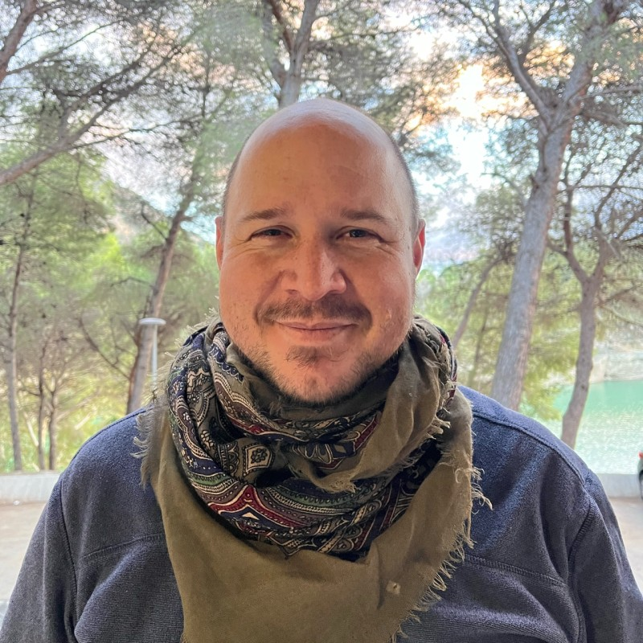

I'm a product-minded iOS Technical Manager with over 15 years of experience leading teams and building reliable, scalable mobile products in fast-moving fintech environments. My work centers on creating clear technical direction and driving execution from discovery to scale.
Santander UK - Mobile Banking App
Master in Applied Data Science
Austral University, Argentina (2022)
Degree in Computer Science
Universidad Nacional de Rosario, Argentina (2002)